Brand book & app flows
Haitian home cooking by Vasthie. This book covers the visual identity, the voice, and every screen of the ordering app and of the kitchen editor that runs it.
The idea
Vasthie, or Shashou to her friends, cooks Haitian food on the weekends she announces. There's no restaurant and no delivery app, just a pot on the stove and people who want a plate. The site has one job: show what she's cooking this weekend, and turn "I want two griot" into a message on her phone.
Logo
The mark is a cast-iron marmite with three wisps of steam, set in a red sun with sixteen alternating rays. It works alone as the app icon, and next to the wordmark in Fraunces Bold.
Color
The cream and coffee carry most of the screen. Piman red is for anything that moves money or food: add, order, send. Blue, mango and green carry meaning: information, highlights, and "open / vegetarian".
#C8361FButtons, prices, accents#1D3B8BInfo, preview, date notes#F4A72CSun rays, highlights, focus#2E6B4AOpen, available, veg#2B1B14Text, dark buttons#FBF3E6Page backgroundRough share of each color on a typical screen.
Typography
Fraunces has round, slightly wonky letterforms that feel handmade, and its italic is used for one phrase per screen at most. DM Sans keeps prices, forms and buttons crisp at small sizes. Both are free on Google Fonts.
Hero 76GriotTitle 28Sides & snacksDish 19Bannann pezeBody 16Twice-fried green plantainsLabel 12Ordering forBuilding blocks
Big, round touch targets (at least 44 px) because people order with one thumb on a phone.
Customers always pick a day first. Every dish can be limited to certain days, like soup joumou on Sundays.
A dish without a photo still looks intentional. Real photos always sell better, so these are a stopgap.
Voice
Warm, direct, a little proud. Use English for clarity, with Kreyòl where it adds feeling, never where it would confuse someone ordering.
| Manje lakay | Home food. The headline promise. |
| Bonjou, I'm Vasthie | The about page greeting. |
| Mèsi anpil! | Thank you so much. Shown after an order is written. |
| Fèt ak lanmou | Made with love. Footer sign-off. |
| Bon apeti! | Enjoy your meal. Use in WhatsApp replies and on labels. |
Flow 1 · Customers
No account and no payment form. The app writes the order as a message; the customer sends it on WhatsApp or by text, and Vasthie confirms by replying.
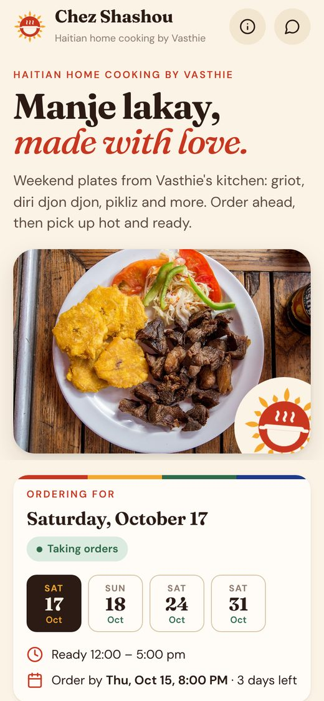
Headline, hero dish, and right away: which day you're ordering for, and how long orders stay open.
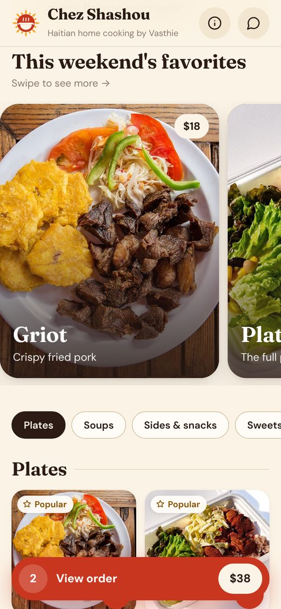
Announcements and this weekend's favorite dishes in large photos, the way a food magazine would show them.
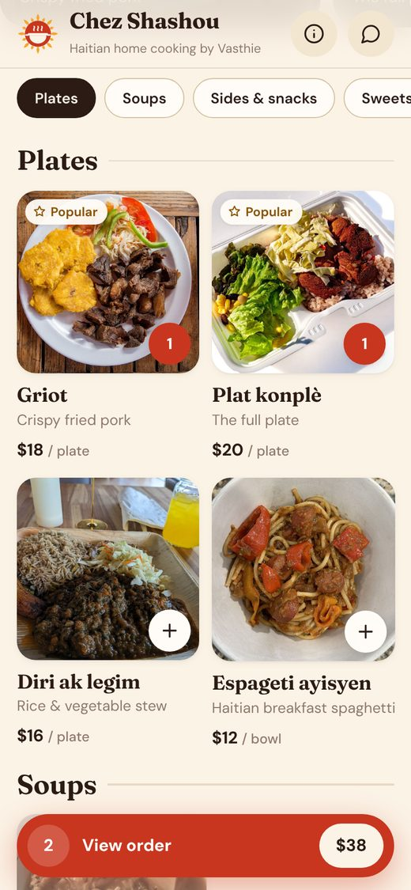
Tap + on any photo. The red bar keeps a running total. Sold-out dishes and dishes for other days are marked on the photo.
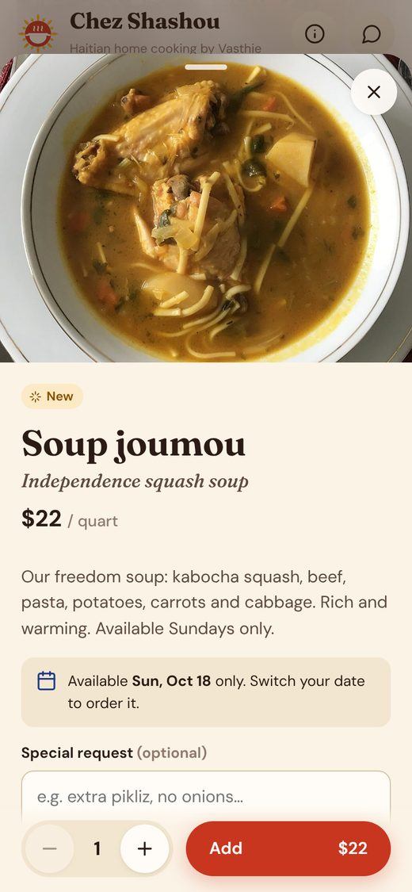
The full story, labels, which days it's available, a special request, and the quantity.
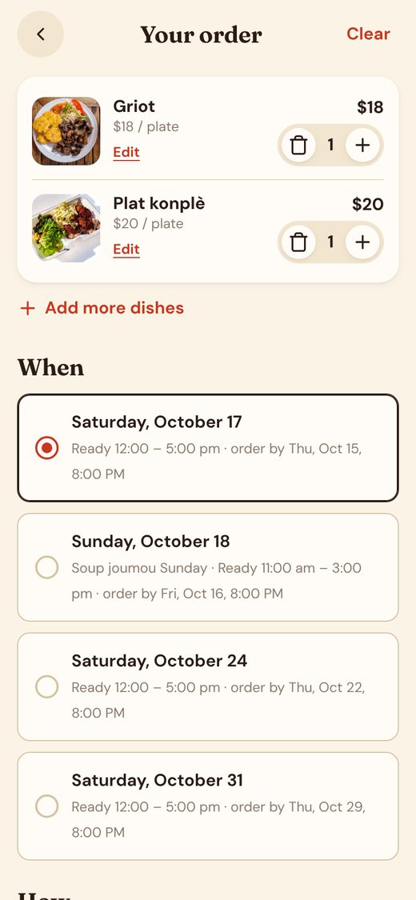
Change quantities, then pick the day. A dish not cooked that day gets flagged before sending.
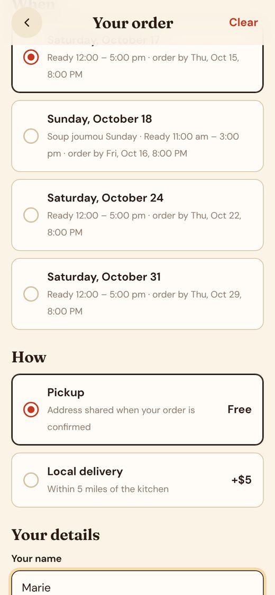
Name, an address only for delivery, a note, the total, and how to pay. Then: Send on WhatsApp, or by text.
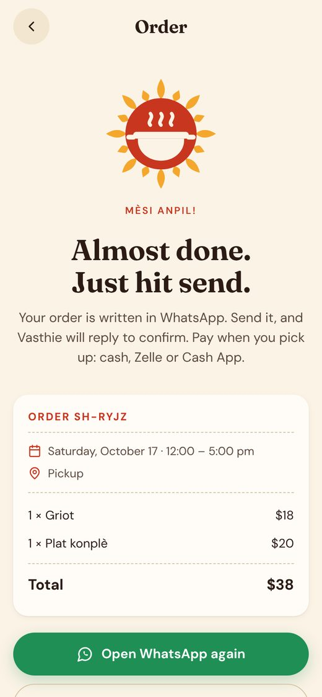
WhatsApp opens with the whole order already written. The receipt stays here with an order code, a copy button, and a text-message fallback.
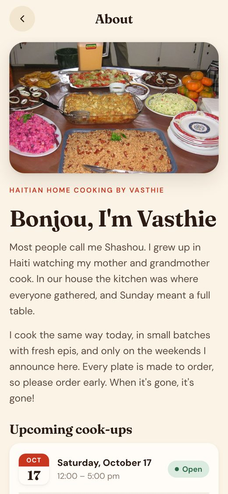
Her story, every upcoming cook-up, and where pickup happens.
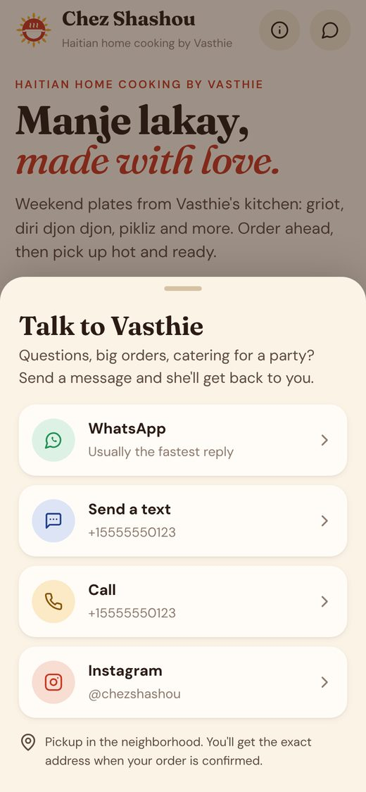
One button opens WhatsApp, text, call, Instagram or email, using the apps already on the phone.
Flow 2 · Vasthie's kitchen
The editor lives at /admin.html. Every change is a draft until she taps Publish, so she can try things out and preview first.
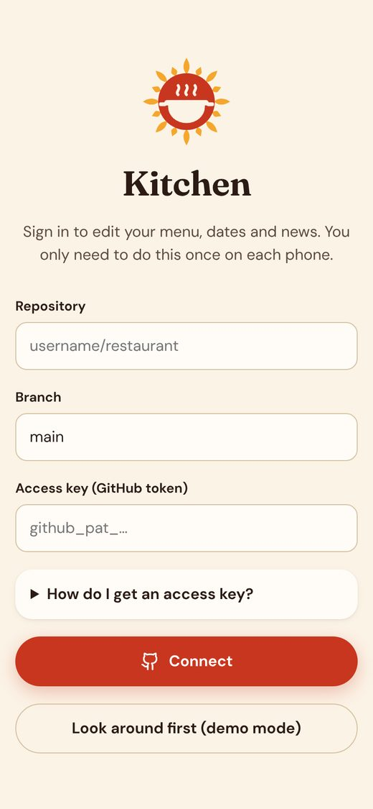
Paste a GitHub access key one time per phone. Step-by-step help is built in.
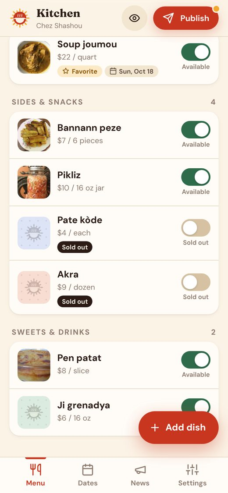
Each dish has a switch. Ran out of akra? Flip it to Sold out and publish.
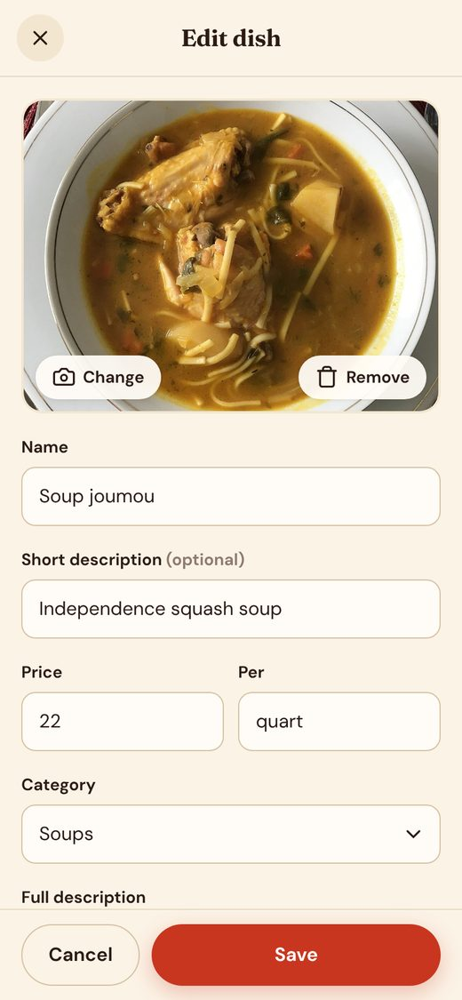
Take a photo right from the camera. It's resized automatically. Then name, price, description.
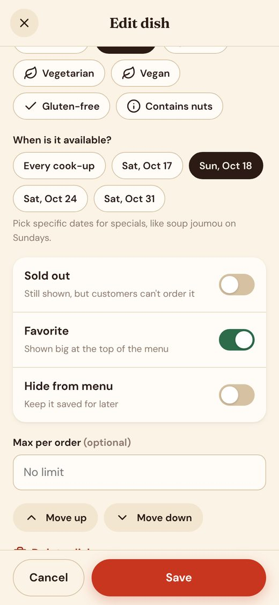
Spicy, vegan, popular. Limit a dish to certain days, feature it, hide it, or cap how many one person can order.
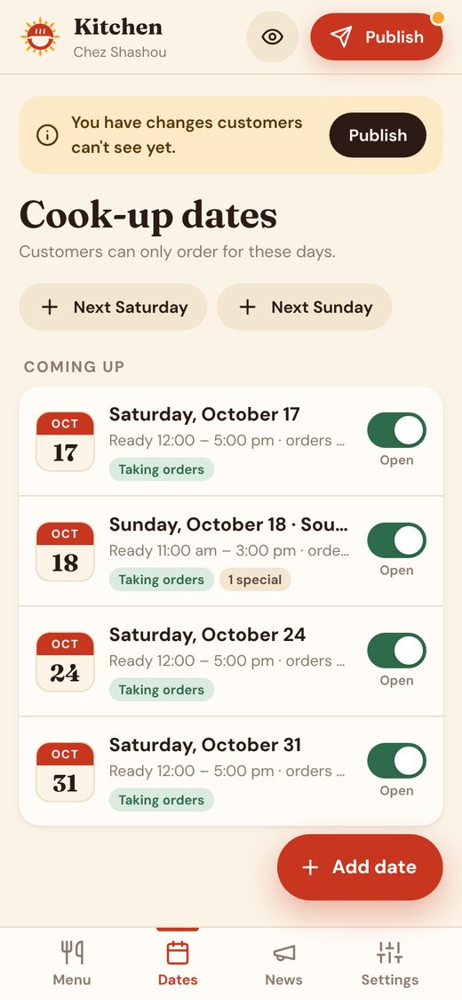
One tap adds next Saturday or Sunday. Pause orders for a day when she's full.
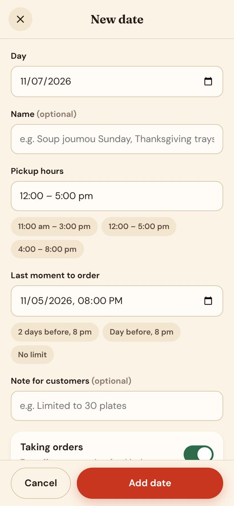
Pickup hours and the last moment to order, with presets. After the deadline, orders close by themselves.
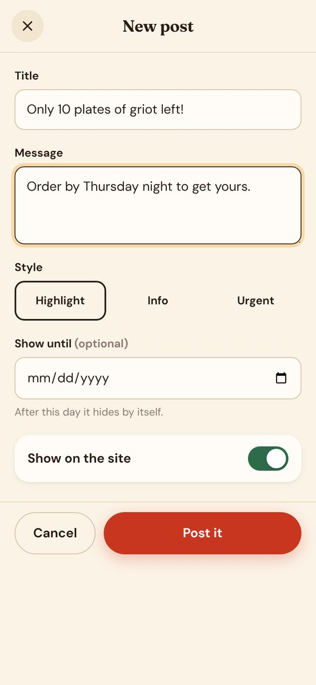
Short posts at the top of the menu, styled as highlight, info or urgent, with an optional end date.
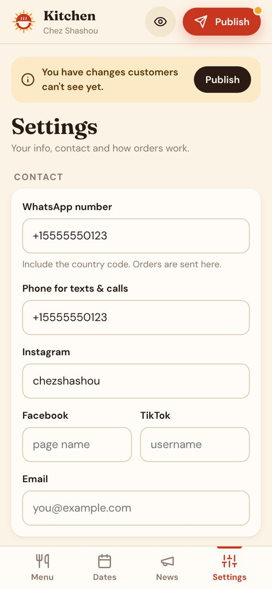
WhatsApp number, socials, payment note, pickup and delivery options and fees, her story and photo, plus backups.
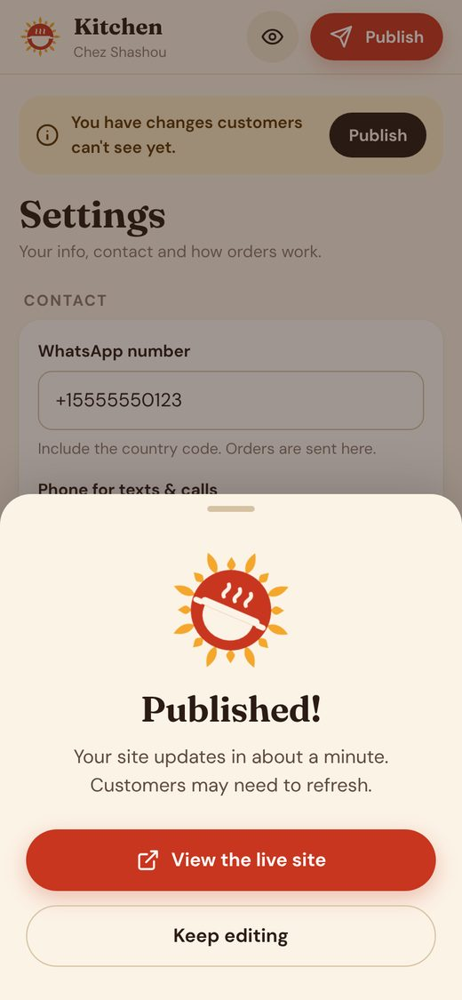
One tap. The live site updates in about a minute.
How it runs
The site is a set of plain files on GitHub Pages, which hosts it for free. The menu is one file, data/site.json. The kitchen editor rewrites that file through GitHub, and orders travel as ordinary messages.
site.json and the photos. Every publish is saved, so any version can be restored.Free| Hosting (GitHub Pages) | $0 |
| Database, server, order processing | $0 |
| Custom domain, e.g. chezshashou.com (optional) | ~$12 / year |
| Total to run | $0 |
Before launch
main branch, root folder./admin.html on her phone.